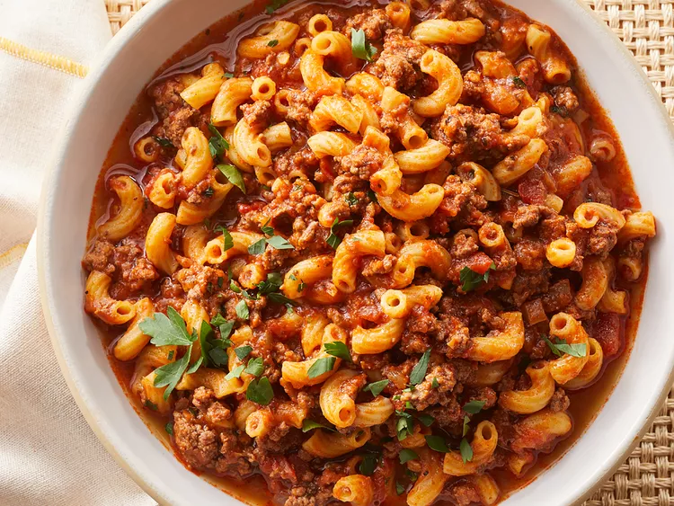

Home
American Goulash

Description
American goulash was one of my all-time favorite comfort food meals when I
was growing up. They served it in my school cafeteria alongside a slice of
buttered white bread and a carton of milk. This Americanized version of
goulash was invented to stretch a small amount of beef into enough food
for a not-so-small family. It's a simple dish that doesn't taste simple,
so it's perfect for your weeknight dinner rotation.
list of ingredients need for serving size of two
- 2 tablespoons olive oil
- 4 pounds ground beef
- 2 large onion, diced
- 8 cloves garlic, minced
- 4 large bay leaves
- 4 tablespoons Hungarian paprika
- 4 teaspoons Italian seasoning
- 4 teaspoons kosher salt
- 1 teaspoon ground black pepper
- 2 pinches cayenne pepper, or to taste
- 2 quart chicken broth or water
- 2 (24 ounce) jar marinara sauce
- 2 cups water
- 4 tablespoons soy sauce
- 4 cups elbow macaroni
- ½ cup chopped Italian parsley
- 2 cups shredded white Cheddar cheese (Optional)
Directions
- Gather all ingredients.
-
Heat oil in a pot over medium-high heat. Add ground beef and onion; cook
and stir until beef is browned and crumbly and onion is translucent,
about 5 minutes. Continue to cook and stir until liquid is evaporated, 3
to 5 minutes. Add garlic, bay leaves, paprika, Italian seasoning, salt,
black pepper, and cayenne.
-
Cook, stirring occasionally, until flavors come together, about 3
minutes. Pour in broth, marinara sauce, and diced tomatoes. Pour water
into the sauce jar, swirl, and pour into the pot. Stir in soy sauce;
bring to a simmer. Reduce the heat to medium and simmer until flavors
intensify, about 30 minutes.
-
Increase the heat to medium-high and bring to a rapid simmer. Stir in
macaroni; cook, stirring occasionally, until just barely tender, about
12 minutes. Check for doneness after 10 minutes.
-
Remove from the heat and discard bay leaves. Stir in Cheddar and
parsley. Cover and let rest for 5 minutes. Taste and season as desired.
Extra notes
Make your own Italian herb mix with a blend of oregano, thyme, rosemary,
sage, parsley, and basil.
You can use sweet Spanish paprika if you can't find Hungarian paprika. You
can also add beans to turn this into an excellent pasta fazool.
Reference
American Goulash